|
|

سیمین بهبهانی لوح تقدیر بنیاد سیمون دوبوار را به ایران آورد
من خوش قدم بودم، توانستم بی دردسر بروم و جایزه را برایتان بیاورم!
گزارش و عکس : آیدا سعادت
دو شنبه7 بهمن 1387
تغییر برای برابری - سیمین بهبهانی شاعر گرانقدری که از سوی اعضای کمپین یک میلیون امضا برای دریافت جایزه ی سیمون دوبوار به پاریس سفر کرده بود به ایران بازگشت و لوح تقدیر بنیاد سیمون دوبوارسرانجام در میان جمع صمیمانه ی تعدادی از اعضای کمپین رونمایی شد.
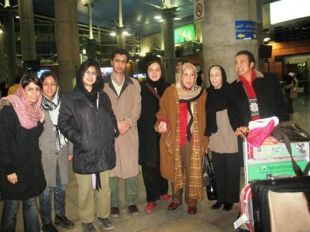
این شاعر گرانقدر و حامی همیشگی کمپین، ابتدا در فرودگاه بین المللی امام خمینی مورد استقبال گرم تعدادی از اعضای کمپین قرار گرفت و عصر روز گذشته، ششم بهمن ماه، بیش از 30 نفر از اعضای کمپین یک میلیون امضا اعم از زنان و مردان کمپینی از تهران و رشت میهمان سیمین بهبهانی بودند. آنان برای تقدیر و سپاس از این که سیمین بهبهانی به جای آنان رنج سفر را بر خود هموار کرد به دیدارش رفتند. سیمین بهبهانی پس از پذیرایی از دوستان لوح سیمون دوبووار و تی شرت و ساک های اهدایی به کمپین را به اعضای کمپین تقدیم کرد و با آنان به گفت و گویی صمیمانه پرداخت. در همین نشست سیمین بهبهانی ییشنهاد داد که لوح سیمون دوبووار به عنوان یکی از اسناد کمپین در کتابخانه صدیقه دولت نگهداری شود که با موافقت حاضران همراه شد.
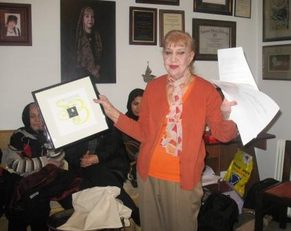
مریم مالک از احساس سیمین بانو در هنگام دریافت جایزه پرسید و او با شور از تجربه ی سفر خود برای کمپینی ها گفت: من دو برابر شما خوشحال بودم. یکی برای این که این جایزه نصیب شما شده و خوشحالی از این که من خوش قدم بودم و توانستم بی دردسر بروم و برگردم و این جایزه را برایتان بیاورم. پیش از سفر کمی دل شوره داشتم برای این که هر کسی که با این نیت قصد خروج از کشور را داشت برایش دردسر تراشیدند اما خوشبختانه خدا کمک کرد که بی دردسر بروم و برگردم. امیدوارم قدر این جایزه را بدانید و حفظ اش کنید و در کمال اتحاد و با احترام به نظر اکثریت در راه دوستی بیشتر پیش قدم باشید.
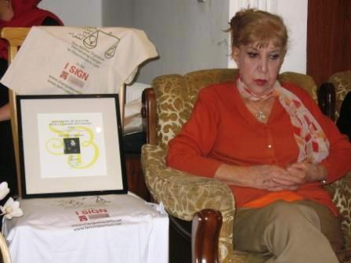
او گفت:در ظرف مدت کوتاهی که من آنجا بودم در همه ی مصاحبه ها توضیح دادم که تنها زنان نیستند که امضا جمع می کنند، دانشجویان اعم از دختر و پسر و مردان و زنان در کنار هم هستند و در هر یک از مصاحبه ها یادآور شدم که این کار با آزادی عمل توام نبوده است و گاه توهین و گاه ضرب و شتم و گاه زندان در پی داشته است. همه آنها از این مسائل هم مطلع بودند. با این که جایزه در سطح نوبل نبود اما تبلیغی که برای آن شد کمتر از نوبل نبوده است.
سیمین بهبهانی با ابراز خرسندی از این که تلاش های جنبش زنان در حال به ثمر رسیدن است خطاب به حاضران گفت: من مثل مادری هستم که بچه هایم بزرگ شده اند و دارم تماشایشان می کنم که هر کدام برای خود شهریاری شده اند. این کار می تواند نسل به نسل ادامه پیدا کند. ما معارضینی هم داریم که اگر زمان کمپین طول بکشد ممکن است بگویند دیدید که مردم توجه ندارند و این خواست آن ها نیست. شاید فرصت این چنین که این تعداد از اعضای کمپین را یک جا ببینم تکرار نشود. می خواهم دلشوره ها و فکر های خود را به شما انتقال بدهم بدون این که بخواهم اعمال نظر کنم. تصمیم نهایی را خودتان باید بگیرید.
درادامه اعضای کمپین دیدگاهای خود را در باره ادامه کار کمپین بیان کردند:
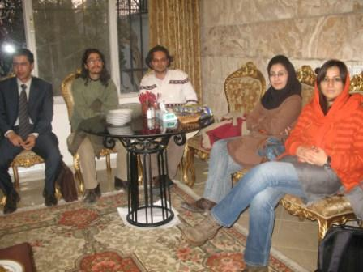
امیررشیدی : باید به میان مردم رفت و با آنها همراه شد
امیر رشیدی: وقتی با دوستان برای جمع کردن امضا می رویم فکر می کنم ما در ایران هستیم و فعالیت می کنیم و بیرون از ایران کسی متوجه ی کار ما نیست. اما وقتی این جایزه یا جایزه گزارشگران بدون مرز را گرفتیم متوجه شدم که انگار دنیا به این تلاش توجه دارد. اما این کار وقتی ارزش واقعی خود را پیدا می کند که دوستان کارگروه امضا به میدان شوش می روند چرا که ترسی که از رویارویی با مردم در این مناطق و گفت و گوی مستقیم با آنها وجود دارد شکسته می شود. همیشه بزرگترین مصیبت روشنفکرها این بوده که با توده ی مردم ارتباطی نداشتند و زبان هم را نمی فهمیدند. واکنش مردم بافت سنتی این طور مناطق اهمیت زیادی دارد و شاید برای اولین بار انسان هایی که در قشر های بسیار متفاوتی زندگی می کنند با هم ارتباط گرفته اند و این بسیار مهم و حیاتی است. ما یک سری تئاترخیابانی را در سطح شهر تهران اجرا کردیم. واکنش ها بسیار متفاوت بود. مردم جنوب شهر حساسیت چندانی نداشتند و دردشان برابری نبود. دردهای دیگری دارند که باید شنیده شود و پروسه ی حساس سازی آنها نسبت به این مسائل در این بافت ها بسیار اهمیت دارد. باید پا را فراتر گذاشت و به میان مردم جامعه رفت و با آنها همراه شد.
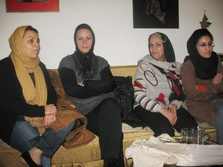
زهره ارزنی: رفتن بین مردم و نوشتن مردم برای تغییر قوانین بزرگترین دستاورد کمپین بود
زهره ارزنی: در دهه ی چهل، در اتحادیه حقوقدانان زنان برای به دست آوردن حقوق برابر فعالیت می کردند و خانم بهبهانی عضو آن حرکت بودند. حالا هم عضوی از کمپین هستند و این باعث افتخار است. در همان دهه ی چهل هم زنان برای تغییر قوانین تلاش می کردند ولی این حرکت ها بیشتر در حوزه تخصصی بود و شاید این رویه تا دهه ی هفتاد هم ادامه داشت و قلمی که در حوزه ی قوانین زده می شد اکثرا حرف های کسانی بود که در این زمینه تخصص داشتند. تفاوتی که کمپین با تمام حرکت ها داشت رفتن بین مردم و نوشتن مردم برای تغییر قوانین بود و این بزرگترین دستاورد بود. ممکن است طی چند سال امضاها را جمع کنیم و قوانین تغییر کند یا نکند اما مهم این است که جوانان و عامه مردم وارد این عرصه شدند و در این باره می نویسند. وقتی مطالبی که حالا جوانان می نویسند و در سایت می گذارند را می خوانم می بینم آنقدر اشراف دارند به موضوع که مثال هایشان از مثال های من حقوقدان هم زنده تر و جالب تر است. برای خود من همه فعالیت هایی که کرده ام یک طرف و عضو کمپین بودن یک طرف است. کمپین مال مردم است و بین مردم جای خود را پیدا کرده است و تنها از آن کسانی که نمادین امضا کرده اند نیست. یعنی کسانی نیستند که از بالا تعیین مشی کنند برای جوانان و جوانان هستند که کار را به دست گرفته اند. در مورد قوانین باید همه ذی نفعان آن صحبت کنند و نه تنها متخصصان.
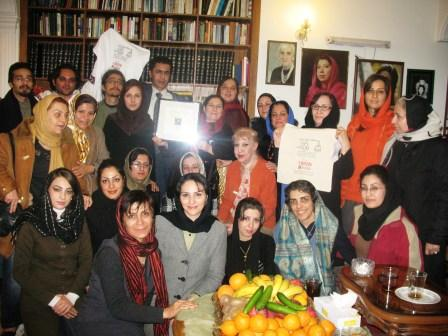
نسرین ستوده : با این جایزه باری را زمین گذاشتیم و خستگی در کردیم
نسرین ستوده : باید هم از کمپین تشکر کرد که با تلاش هایی که کرد و هزینه ی غیرمنتظره ای که پرداخت کرد این جایزه را به دست آورد و هم از خانم بهبهانی عزیز که با مدیریت خردمندانه ی خودشان این جایزه را به سامان تحویل گرفتند و برایمان آوردند و این باعث سربلندی همه ما بود. بزرگترین سرمایه ای که ما داریم افکار عمومی است و با دریافت این جایزه فهمیدیم که چقدر افکار عمومی به این تلاش و تمام سختی هایی که ما این دو سه سال کشیدیم احترام می گذارد. بیست و سوم خرداد امسال طی هشت ساعت که با هشت تن از فعالان کمپین در یک بند بودیم متوجه تلاش های شبانه روزی این دوستان شدم . البته ممکن است بعضی از اعضا که به زندان می افتند بیشتر به چشم می آیند اما تلاش تمامی اعضا ارزشمند و قابل احترام است. این جایزه نقطه ای بود که ما باری را زمین گذاشتیم و خستگی در کردیم. من به دلیل ارتباطی که با کمپین دارم خودم را در این شادمانی سهیم می دانم البته همیشه گفته ام ما وکلا بیش از هر چیز افتخار دفاع از اعضای کمپین را داشته ایم.
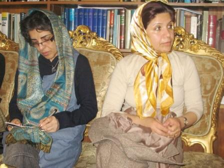
پروین اردلان: کارگروه های جمع آوری امضا شور دوباره ای به کمپین داد
پروین اردلان : در مورد جمع آوری امضا چون قصد و هدف ما این بوده است که امضاها به صورت چهره به چهره جمع آوری شود این کار تنها برای حامیان به صورت اینترنتی انجام شده است. اما دوستان جوان تر هر بار با ابتکاراتی که به خرج می دهند شوق جمع آوری امضا و ادامه حرکت را بیشتر می کنند و حالا هم با تشکیل کارگروه های جمع آوری امضا این فعالیت ها شدت گرفته است و شور دوباره ای به کمپین داده است. برخی از اعضای کارگروه ها حضوردارند و می توانند در مورد کار جمع آوری امضا توضیح بیشتر بدهند.
مریم زندی: ما این پرچم را زمین نخواهیم گذاشت
مریم زندی: چند ماهی هست که کار جمع آوری امضا به صورت جدی تر پیگیری می شود. هر کدام از ما به جز اواسط هفته که به طور عادی امضا جمع می کنیم یک روز تمام از هفته را به جمع آوری امضا اختصاص می دهیم و در گروه های چندین نفره میان مردم حاضر می شویم و کمپین را به آنها معرفی می کنیم. این کارگروه در اواسط هفته هم فعالیت را ادامه می دهد. هر یک نفری که دفترچه را به خانه می برد با اطرافیانش گفتگو می کند و همین موضوع باعث می شود که تاثیر این گفتگو ها به بخش زیادی از جامعه تسری پیدا کند. ما این پرچم را زمین نخواهیم گذاشت و با شادی و هیجانی که در کارگروه وجود دارد با انگیزه تمام به میان مردم خواهیم رفت.
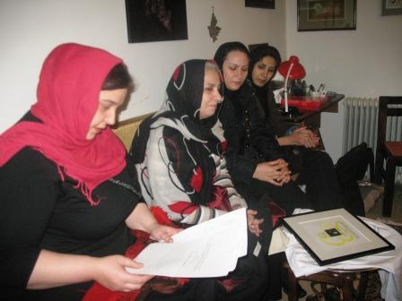
سوسن طهماسبی : ما در شبکه ی گسترده ای کار می کنیم که سه نسل از زنان و مردان در کنار هم برای یک هدف تلاش می کنند
سوسن طهماسبی: برای من به شخصه مایه ی افتخار است که فردی مورد احترام و افتخار نه تنها کمپینی ها بلکه تمام ایرانی ها به پاریس رفته و زحمت دریافت چایزه را کشیدند. من بسیار خوشحالم از این که دنیا حرکت زنان ایران و کمپین را مورد توجه قرار داده است. با حرکتی که تا این حد مسالمت آمیز است تصویری که از زن ایرانی و جامعه جوان ایران وجود داشت تغییر کرد. کدام یک از انجمن های مختلف توانسته اند این همه نیروی جوان جذب کنند؟ ما در شبکه ی گسترده ای کار می کنیم که سه نسل از زنان در کنار هم و در کنار مردان و پسران جوان با دیدها و باورهای مختلف و از طبقات گوناگون اجتماع کنار هم برای یک هدف تلاش می کنند و حاصل این می شود که این چهره ی فعال و کنشگر را از طریق کار خود در دنیا ارائه می دهیم. اما در عین حال مهمترین بخش کار ما تصویری است که ما در داخل از خود می سازیم و این بسیار مهم است که دوستان ما بتوانند در جامعه ی خودمان با مردم ارتباط برقرار کنند. در این مدت با بسیاری از افراد صحبت کرده ام که در عین حال که بسیار خوشحال بودند از این که کمپین مورد توجه بین المللی قرار گرفته است از این که استقلال خود را حفظ کرده ایم اظهار خرسندی می کردند. خانم بهبهانی می گفتند که دریافت نکردن جایزه نقدی بیش از آن که برای خارجی ها عجیب باشد برای ایرانیان عجیب بود. بیشتر آنها هم تصور می کردند که دلیل این کار ترس از مسائل امنیتی است در حالی که برای بسیاری از ما حفظ استقلال کمپین مهم بود و افکار عمومی مردم ایران که فکر نکنند ما به جز حمایت مالی خودمان از جای دیگری هم دریافت مالی داشته ایم و این اعتمادی که مردم با این شکل به ما کرده اند و اسم خود را در زمانی که واقعا ترس وجود دارد پای بیانیه ها بگذارند و با کنش کوچکی مانند امضا کردن فعال شوند و صدای اعتراض خود به تبعیض را بلند کنند جای احترام دارد. ما از بسیاری از کشورهای دیگر یاد گرفتیم و کار را شروع کردیم اما حالا وقتی دوستان ما در کنفرانس های بین المللی شرکت می کنند برای خارجی ها عجیب است که چنین حرکت بزرگی تنها به صورت داوطلبانه و بدون کمک مالی و تامین خودمان جلو می رود. ما الگوهایی را ارائه می دهیم که جهان می تواند از آن بیاموزد.
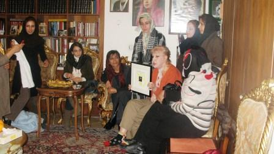
منصوره شجاعی : پشت هر کدام از این امضاها ارتباط، آموزش، آگاهی و همدلی هست
منصوره شجاعی: روح حاکم به کمپین تنها در گرفتن امضا خلاصه نمی شود. این حرکتی است که نمادی برای خواسته ها گذاشت و در سه محور پیش رفت. گفتگو و ارتباط با مردم، آموزش و جمع آوری امضا. همه ما از شنیدن فعالیت هایی که دوستان انجام می دهند به شوق می آیم. ما در کدام بستر می توانستیم این همه با مردم مرتبط باشیم ؟ وقتی می گوییم کمپین همه افراد از گروه های مختلف در آن دور هم جمع شده اند و تبدیل شده است به یک جنبش پر شور که در واقع تجسم واحدی از تمام مطالبات زنان است. من بسیاری از موضوعات را در کارگاه ها و از وکلایی چون خانم ارزنی یاد گرفتم. سالها ادعا می کردم مدافع حقوق زنان هستم اما در بستری قرار نگرفته بودم که این مسائل را بیاموزم. بحث آگاهی به نظر من بسیار مهم تر از مسائل دیگر است. پشت هر کدام از این امضاها ارتباط، آموزش، آگاهی و همدلی هست.
حمیده نظامی: این بزرگترین دستاورد کمپین است که به میان مردم می رویم
حمیده نظامی: هدف اولیه ما ارتباط چهره به چهره است. در این ارتباط وقتی به جنوب شهر می رویم زنانی هستند که هم سن و سال ما و بلکه جوان تر هستند اما سواد خواندن بیانیه را ندارند. یا خانمی که با کلامی ساده تر و با صرف زمانی بیشتر منظور ما را درک می کند این بزرگترین دستاورد کمپین است که به میان مردم می رویم.
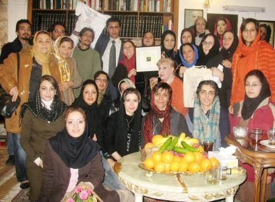
شهاب الدین شیخی:موضوع اصلی آگاهی مردم است و این کار به ما تجربه های بیشتری می دهد
شهاب الدین شیخی: در اهدای این جایزه به کمپین از کلمه نشر آگاهی استفاده شده است. برای من که کمپین را از دور می دیدم و حامی آن بودم از یک مقطعی این ضرورت پیش آمد که باید همراه با همین دوستان بروم و امضا جمع کنم. موضوع اصلی آگاهی مردم است و این کار به ما تجربه های بیشتری می دهد. به نظر من صرف جمع کردن یک میلیون امضا با کار گسترده ای که در حال انجام است به سامان می رسد اما آنچه که مهم است و اتفاق می افتد این است که بسیاری از زنان جامعه از این مطالبات خبر ندارند. این است که روش چهره به چهره گرچه طولانی تر و با زحمت و هزینه انسانی بیشتری همراه است اما در نهایت نتیجه ی بسیار بهتری دارد. ما یک میلیون انسان آگاه و روشنفکر داریم که می توانند از طریق اینترنت امضا کنند و کار را به نتیجه برسانند اما فرقی که کمپین با حرکت های قبلی زنان ایران داشته است این است که کمپین هدف دیگری دارد و آن هم این است که به سراغ مردمی برود که جزو نحله های روشنفکری جامعه نیستند و این دردها را هم حس کرده اند از آن مردم امضا جمع کند.
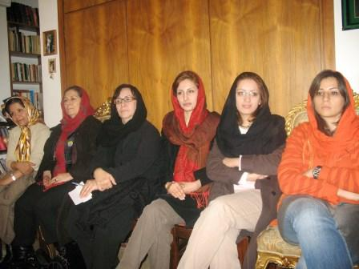
هدا امینیان: نمی توان برای پایان دادن به کمپین زمان تعیین کرد
هدا امینیان: بسیاری از قوانین در پروسه و فرایند فعالیتی که ما در حال انجام آن هستیم کاری که در حال انجام است اصلاح می شوند. مثل بحث ارث که در حال اصلاح است و یا قوانین دیگری که مورد تجدید نظر قرار می گیرند. ممکن است تا هر زمانی جمع آوری یک میلیون امضا طول بکشد و در نهایت دولتمردان هم خواسته های ما را تامین نکنند. اما پروسه ی آگاه سازی باید طی شود. بسیاری از افراد دسترسی به اینترنت که تنها رسانه ی ما است ندارند و گفتگوی چهره به چهره این خلاء را پر می کند. کمپین حد نهایتی نخواهد داشت و آنقدر گسترده شده است که نمی توان در مورد پایان آن تصمیم خاصی گرفت. امیدواریم که در طی این مسیر به هدفی که داریم برسیم.
نسیم سرابندی: ارتباط چهره به چهره با مردم کمپین را به شکل الگویی به دنیا معرفی کرد
نسیم سرابندی: جایزه ای که کمپین دریافت کرد باعث شد که انگیزه ی دوباره ای در فعالان آن ایجاد شود . این را من در میان صحبت های دوستانم می شنوم .احساس می کنیم که حرکت ما به رغم تمام فراز و نشیب هایی که داشته است و به دلیل پروسه ی طولانی آن طبیعی هم است جنبه ی معنوی که داشت تاثیر بسیار زیادی داشت. در کمپین هیچ چیز به اندازه ی آگاهی بخشی آن اهمیت ندارد هنوز بعد از دو سال و نیم در میان دوستانی قرار دارم که دلشان می خواهد در مورد مسائل حقوقی بیشتر بدانند و وقتی برای سخنرانی دعوت می کنند و یا در جلسات بحث می کنند با خودم فکر می کنم که اگر کمپین نبود این مطالبه محوری از چه طریق دیگری می توانست تا این حد امکانش به وجود بیاید. الگو شدن کمپین مساله ی بسیار مهمی است . هم در حرکت های مدنی و مسالمت آمیز و هم در جامعه، ارتباطی که با مردم به صورت چهره به چهره برقرار شد کمپین را به شکل الگویی به دنیا معرفی کرد.
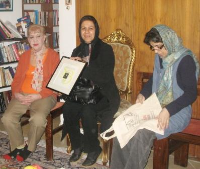
سیاوش خدایی: شیوه کار کمپین دست کم برای جامعه ی ایران بدیع است.
سیاوش خدایی: غالب کسانی که اینجا هستند اوج لذتشان این بوده که کتابی از ژولیا کریستوا بخوانند و برای من جالب بود که زمانی بسیاری از تئوری های ژولیا کریستوا را خلاصه نویسی می کردیم و شاید ما را مسخره می کردند حالا به جایی رسیده ایم که از دست ژولیا کریستوا جایزه ای دریافت می کنیم. برایم جالب است بدانم که برای خانم کریستوا شکل کار ما مهم تر بود یا محتوای حرکت و این که رئیس و مرئوس در میان ما نیست. ما همیشه عادت کرده بودیم که همیشه دنباله روی افراد پیشرو باشیم و وقتی روش کار خود را در کنفرانس ها توضیح می دادیم شاید کاملا متوجه ی شیوه عمل نمی شدند این اولین بار بود که بی آن که خودمان بدانیم از بسیاری از فعالان پیش افتاده ایم. شیوه کار کمپین دست کم برای جامعه ی ایران بدیع است.

 فیلمی از مراسم اهدای جایزه سیمون دوبوار
فیلمی از مراسم اهدای جایزه سیمون دوبوار


 تهیه شده توسط کمپین پاریس
تهیه شده توسط کمپین پاریس